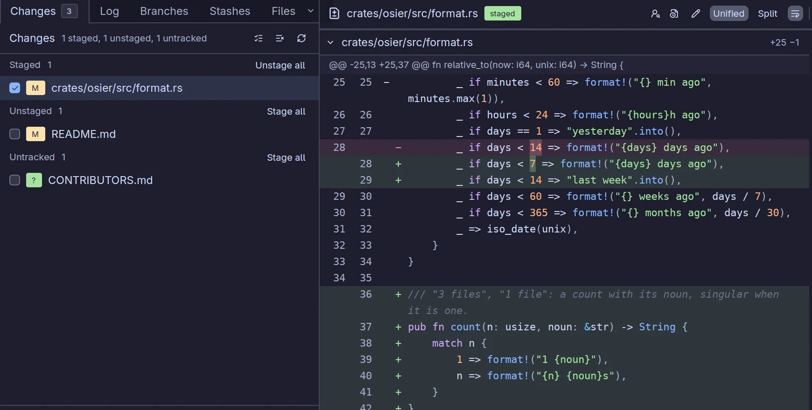
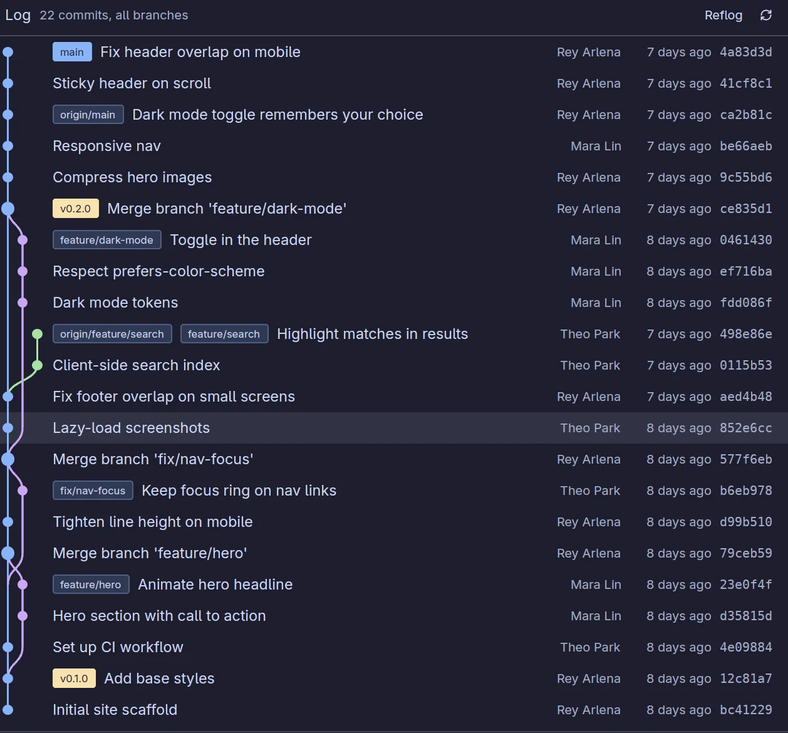
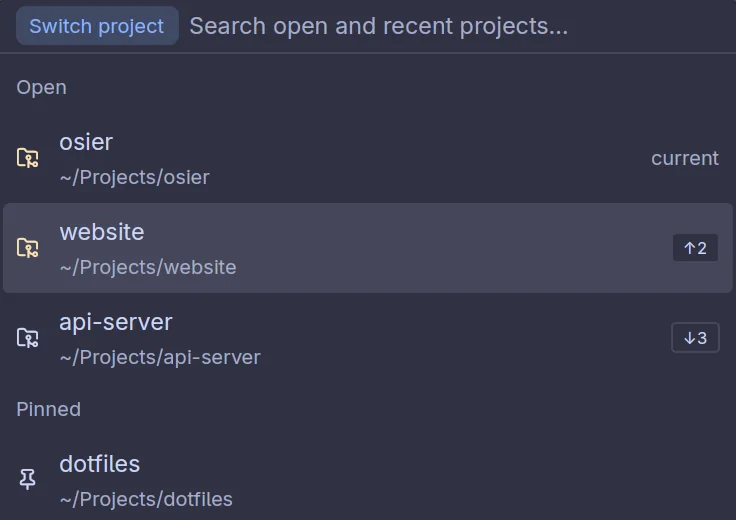
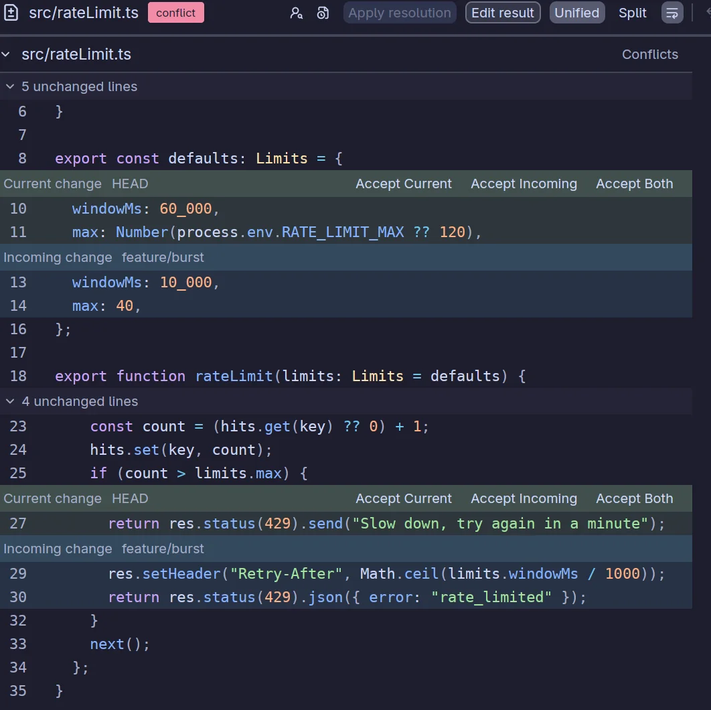
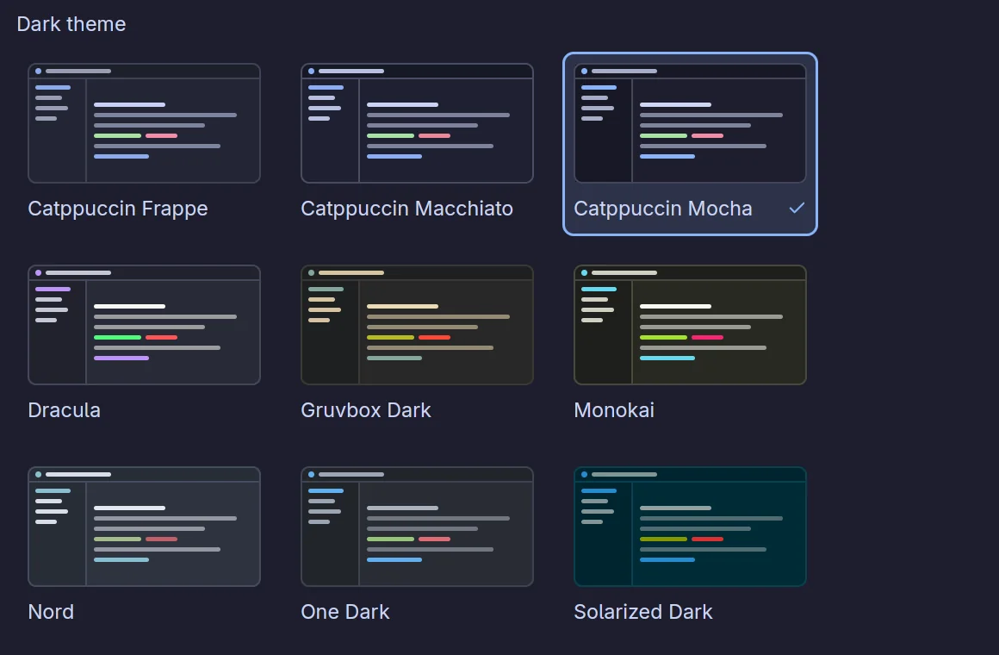

A fast, native, beautiful Git GUI for Linux.A fast AFGit GUI.
Osier is a Git client for Linux, written in Rust and drawn on your GPU.
Stage single lines, read your history as a graph and untangle merges
without waiting on your tools. It's on screen in about 140 ms.
$curl -fsSL https://raw.githubusercontent.com/ReyArlena/osier/main/install.sh | sh
The everyday work is one click or one keystroke away, and the scary stuff is
just as easy to get right.
Staging
Stage the line, not the whole file.
Pick exactly what goes into a commit: whole files, single hunks or a few
selected lines straight from the diff. Then commit, amend, sign off, or commit
and push in one go.
Unified or split diffs with syntax highlighting
Discarded untracked files go to the trash, not the void
Your recent commit messages, one click away

History
History that reads like a map.
A real commit graph with branch and tag labels, paged so even long histories
stay quick. Compare any two commits, follow a file through renames, and blame
any line straight back to the commit that wrote it.
Shift-click two commits to compare them
Cherry-pick, revert, reset or rebase from the log
The reflog, for when you need an undo button for Git

Keyboard
Keyboard first. Mouse welcome.
Every action lives in the command palette, and every shortcut can be rebound,
including an optional leader key. CtrlO switches project
in a couple of keystrokes, opening it if it isn't already.
66 rebindable actions, with conflicts flagged as you record
j / k in lists, Space to stage, CtrlEnter to commit
Right-click menus everywhere, if you're a mouse person

Conflicts
Merge conflicts, minus the dread.
Conflicts open right in the diff pane. Accept the current side, the incoming
side or both, block by block, or edit the result yourself. Interactive rebase,
cherry-pick and revert all land here when they collide.
Continue or abort the merge from a banner, no terminal needed
Take a whole file as ours or theirs in one click

Looks
Easy on the eyes, day or night.
Catppuccin, Dracula, Nord, Gruvbox, Solarized, Tokyo Night, One Dark, Monokai
and more, with light and dark picked separately. Osier can follow your desktop's
light or dark setting, and drop-in theme files reload while it runs.
Live colours from Dux Shell, if that's your desktop
Your own UI and code fonts

02 / And the rest
The other things you'll be glad it does.
Fetch, pull, push
Live progress and a cancel button. Osier offers to set an upstream when a
branch has none, and force pushes are always --force-with-lease.
Several GitHub accounts
Through the gh CLI. Pick an account per project and Osier remembers it. Tokens
never touch a command line or a log.
Stash and shelve
Stash with a message, or shelve changes onto a patch clipboard and carry them to
another project.
Patches
Copy files or commits as a patch. Apply from the clipboard or a file, with a dry
run first and a three-way fallback.
Branches, tags, remotes
Checkout, create, rename, merge, rebase onto and delete, with a confirmation
wherever work could be lost.
Worktrees and submodules
Listed alongside your branches with their state, and updated in one go when you
need them.
Files at any revision
Browse code with highlighting, rendered markdown and images at any commit, and
edit files in place.
A sidebar for every repo
Open, pinned and recent projects, plus folders scanned for repositories, with
ahead, behind and changes at a glance.
SSH prompts that behave
Passphrases and Git prompts get Osier's own small window, not a hung process in
the background.
Open it elsewhere
Send a file or the whole project to your editor, a terminal or the file
manager, or open the repository on GitHub.
Git LFS aware
LFS pointer files are recognised and labelled, so you never stare at a hash
wondering where your image went.
Editable diffs
Fix a typo right in the diff, or revert a single hunk, without leaving the
change you're reviewing.
03 / Speed
Fast to open. Faster to use.
Osier is a native Rust app, so there's no browser engine to boot and no
JavaScript to warm up. The interface is drawn on your GPU, and the keyboard
reaches everything.
Launch to window on screen~140 ms
git status, 10,000 files, 2,000 changed~65 ms
App memory with ten repositories open~35 MB
App memory with 446 real repositories open~170 MB
Bars are out of one second and one GB. Measured on a
Framework 13 (Ryzen 5 7640U), launch until the compositor showed the window, and
memory after opening ten repositories. App memory is Osier's own heap, the figure
most system monitors show; counting its fair share of the GPU driver and font
libraries it is about 95 MB. Your numbers will vary; ours did too, by a few
milliseconds.
Shortcuts that stick
CtrlP opens the command palette. Type a few letters, hit Enter.
CtrlO switches project, opening it if needed.
Ctrl1 to 6 jump between tabs.
CtrlShiftF, L and P fetch, pull and push.
/ searches projects, ? searches files.
All of them are defaults. Change any of them in Settings, or in
keymap.toml.
04 / How it's built
Built to be trusted with your repositories.
Your Git, not a lookalike
Osier runs the git you already have, so hooks, credential helpers, your SSH
agent, conditional identities and LFS all behave exactly as they do in a
terminal.
Native, all the way down
Written in Rust on gpui, a GPU-accelerated UI framework, and rendered through
Vulkan. Slow git work runs in the background, so the window stays responsive.
Careful with your work
Anything that could lose work asks first. Untracked files go to the trash,
and force pushes always use --force-with-lease.
Nothing hidden
A command log shows every git command Osier runs, with its output, exit code
and timing. Copy any of them and run it yourself.
Stays on your machine
No telemetry, no account, no update pings. The only network traffic is Git's
own, plus images in READMEs, which you can switch off.
Config you can keep in dotfiles
Plain TOML settings and keymap in ~/.config/osier, picked up live
when you edit them. Themes are JSON files you can drop in.
05 / Install
Up and running in one command.
Pick whichever suits your system. They all install the same app.
Install script
Recommended
Fetches the latest release for x86_64 or ARM64 into ~/.local/bin,
with the desktop entry and icons. It builds from source with cargo if no release
matches your machine.
$curl -fsSL https://raw.githubusercontent.com/ReyArlena/osier/main/install.sh | sh
From source
Needs a Rust toolchain and a few development libraries, listed in the
README.
Needs Linux on Wayland or X11, git 2.30 or newer and a
GPU driver with Vulkan. Then run osier, or osier ~/path/to/repo.
06 / FAQ
Questions people ask first.
Is Osier free?
Yes. It's open source under the MIT licence, with no paid tier and nothing to sign
up for.
Does it run on macOS or Windows?
Not yet. Osier is Linux first, on Wayland with an X11 fallback. Ports to macOS and
Windows are on the roadmap.
Will it mess with my Git setup?
No. Osier runs your installed git, so it uses your config, hooks, credential
helpers and SSH agent as they are. It keeps its own settings in
~/.config/osier and only changes your repositories when you ask it to.
Is it safe on real work?
It's built to be. Anything that could lose work asks first, untracked files you
discard go to the trash, force pushes always use --force-with-lease,
and the command log shows exactly what ran.
Does it phone home?
No. There's no telemetry, no account and no update check. Network traffic is
Git's own, plus remote images in markdown files, which you can turn off in
Settings.
Can I use more than one GitHub account?
Yes. Osier works with the accounts you've signed into with the
GitHub CLI, lets you pick one per project and
remembers your choice.
Where do I report a bug or ask for a feature?
On GitHub issues. Copying the
failing command from the command log into your report helps a lot.
Go on. Commit to something.
One command to install, and your repositories are waiting. You can always go back to
typing git add -p by hand. We won't tell anyone.
$curl -fsSL https://raw.githubusercontent.com/ReyArlena/osier/main/install.sh | sh